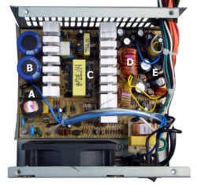

How It Works
Switch mode power supplies, like any other power supplies, convert AC/DC to (Usually lower voltage) DC. They, however, differ in many ways.
- Unlike a linear power supply, the pass transistor of a switching-mode supply continually switches between low-dissipation, full-on and full-off states, and spends very little time in the high dissipation transitions, which minimizes wasted energy. A hypothetical ideal switched-mode power supply dissipates no power. Voltage regulation is achieved by varying the ratio of on-to-off time (also known as duty cycles). In contrast, a linear power supply regulates the output voltage by continually dissipating power in the pass transistor. This higher power conversion efficiency is an important advantage of a switched-mode power supply.
- This leads to several advantages:
- Lower Conversion Losses (Up to 96% Efficiency)
- Smaller Size
- Lower Noise
- Along with Several Disadvantages:
-
Greater Complexity
-
More Noise introduces on the output (from high frequency switching)
Here is an image of the inside of a SMPS:

-
A: Input EMI filtering and bridge rectifier;
-
B: Input filter capacitors;
"Between" B and C: primary side heat sink;
-
C: Transformer;
Between C and D: secondary side heat sink;
-
D: Output filter coil;
-
E: Output filter capacitors.
-
The coil and large yellow capacitor below E are additional input filtering components that are mounted directly on the power input connector and are not part of the main circuit board. ATX power supplies provide at least 5 independent voltage outputs..
Links:
Wikipedia: SMPS
You thought there was going to be more here didn't you?
Wikipedia Knows All